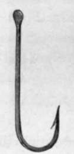

Chapter III. Whippings, Servings, Knots, Hooks, And Sundry Wrinkles
Description
This section is from the book "Sea Fishing", by John Bickerdyke. Also available from Amazon: Sea Fishing.
Chapter III. Whippings, Servings, Knots, Hooks, And Sundry Wrinkles
While it is not necessary for a fresh- or saltwater angler to be intimately acquainted with the details of tackle-making, it is certainly most desirable that he should learn how to tie or whip a snooding on to a hook, join lengths of gut together, renew a ring on his rod, and do sundry other little incidental matters any one of which may crop up in the course of a day's fishing. These things are easy, provided we know the right way of doing them ; and everyone who fishes either in fresh water or salt— except, of course, anglers of some experience—should carefully read the instructions given in this short chapter, made easily understandable by means of diagrams.
Most necessary materials for repairs and simple tackle-making are wax, some strong silk, linen thread, and lightly twisted, tarred, hemp twine. These are for whippings and servings. I am not sure whether there is any great difference between these two terms. Perhaps when we bind two things together, as, for instance, gut to hook, we should call it a ' whipping ;' while for the simpler binding, intended merely to act as a protection (for instance, a binding of silk laid round a length of gut to prevent a lead which is on the gut from fraying it), we say we 'serve' the line rather than 'whip' it. But the process in each case is the same.
For wax we should have either that used by cobblers, or harness-makers, or simply a piece of beeswax. The first is the most sticky ; the last is the cleanest to use ; the harness-maker's standing midway between the two. I generally use beeswax myself. If cobbler's wax is used it should be kept in a piece of leather so that it need not be touched with the fingers.
HOW TO WHIP ON A HOOK.
The strongest silk, easily obtainable, is the ' twist' sold for edging buttonholes in cloth. If it is too coarse for any particular purpose, untwist it and use a strand of it. The sewing silks on reels are usually weak, unless intended for sewing-machine work, and probably are seldom pure silk. For the coarser servings there is nothing better than a piece of fine Nottingham silk line, either twisted or plaited. But the regular thing is soft hemp twine dressed with Stockholm tar It is useful for a variety of purposes, particularly for whipping the ends of ropes and the stouter fishing lines to prevent them from becoming unravelled. If we have not the best thing possible for any of these purposes, common twine will suffice, or even sewing cotton, though that is poor stuff. In fact, whatever is available must be used, always bearing in mind that if it is too fine several pieces can be twisted up together, and if too coarse it can be unravelled into several strands. Of all men the angler should be, and usually is, the most resourceful.
To begin a piece of binding it is usual to lay the silk, which should be thoroughly well waxed, in the position shown in the diagram (1), but some people start it with a clove hitch (see Chapter VII.) The waxed silk is then carried neatly and tightly round and round the thing to be whipped or served. The finish-off always embarrasses beginners. There are several ways of doing this, and I will give two ; the first being suitable for a hook or the point of anything. A hook is shown in the diagram on the previous page, and for the sake of clearness it is a large one and the binding somewhat thick.
Having wound on nearly as much silk as is required, the end b should be laid straight along the shank (2), leaving a loop a large enough for the point and bend of the hook to pass through (3). Hold the hook and the end tightly in the right hand close to d, and with the thumb and first finger of the left hand take hold of the silk at c and wind it three times round the hook (3). At each wind the point and bend of the hook will pass through the loop ; then (4) pull the end b until the loop disappears ; cut off the end, and the thing is finished in much quicker time than it has taken me to describe it.
But suppose we have to whip on a ring in the middle of the rod. It would be very inconvenient to make the loop a (2) large enough for the rod to pass through. That would require a piece of silk ten feet long or more ; so we effect exactly the same finish in the manner illustrated. Place the thumb and finger of the right hand over the bound portions to keep them in position, and deal with the end of the silk exactly in the way shown in the diagram (fig. 1). Then take hold of the silk at B, wind it three times round the rod, as is commenced in fig. 2, and completed in fig. 3. Next pull the end a tight and the slack piece will disappear. It is very much like a conjuring trick, and quite as simple when you know how it is done.
To Finish Central Whippings.
1. 'Pennell-Limerick' Hook (Eyed).
2. Curved Limerick Hook (Eyed).
3. Round Bend Hook (Flatted) Shank.
There are several varnishes made expressly to cover whippings of this kind, and they are suitable for nothing else. The following is a good receipt : powdered shellac 6 parts, spirits of wine 8 parts, gum benzoin 2 parts. The binding after being varnished should not be exposed to the wet for at least twenty-four hours, and it is important that it should be kept in a dry place. This varnish is suitable for whippings on rods and hooks, but not for those at the ends of ropes or lines. For them the tar or wax on the whipping material suffices.
If one is binding on hooks intended to catch fish with sharp teeth, it is a capital— in fact, almost necessary — plan to take some fine soft copper wire, wax it well, and serve over the silk binding. It can be finished off in the way I have described.
Continue to:
- prev: Round The British And Irish Coasts. Part 9
- Table of Contents
- next: Whippings, Servings, Knots, Hooks, And Sundry Wrinkles. Part 2
Tags
fishing, hooks, bait, fishermen, spanish mackerel, mackerel fishing